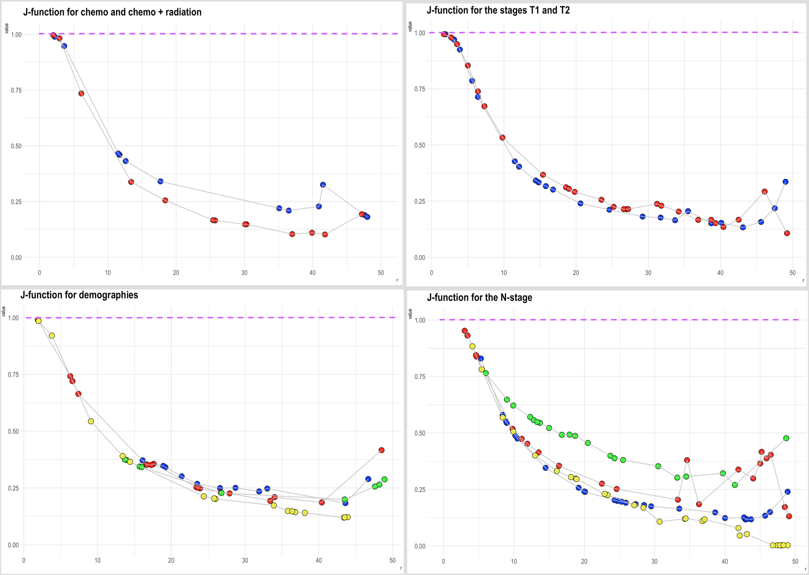
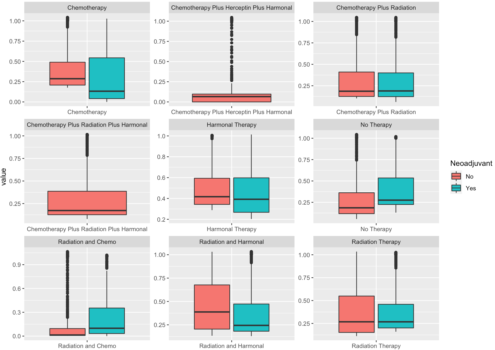
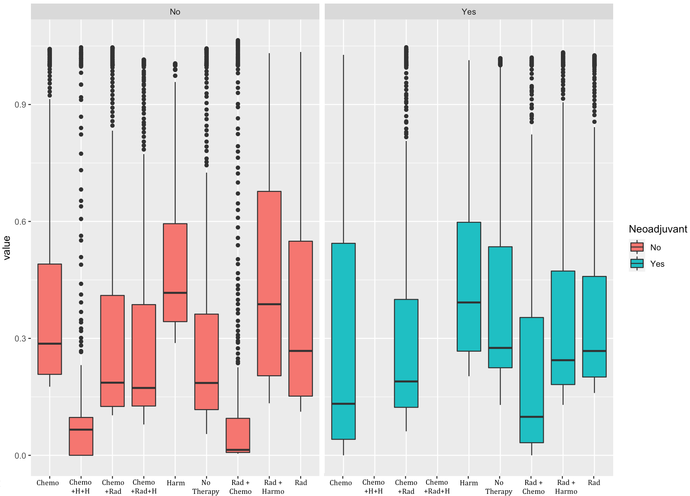
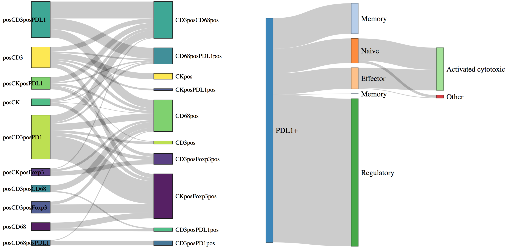
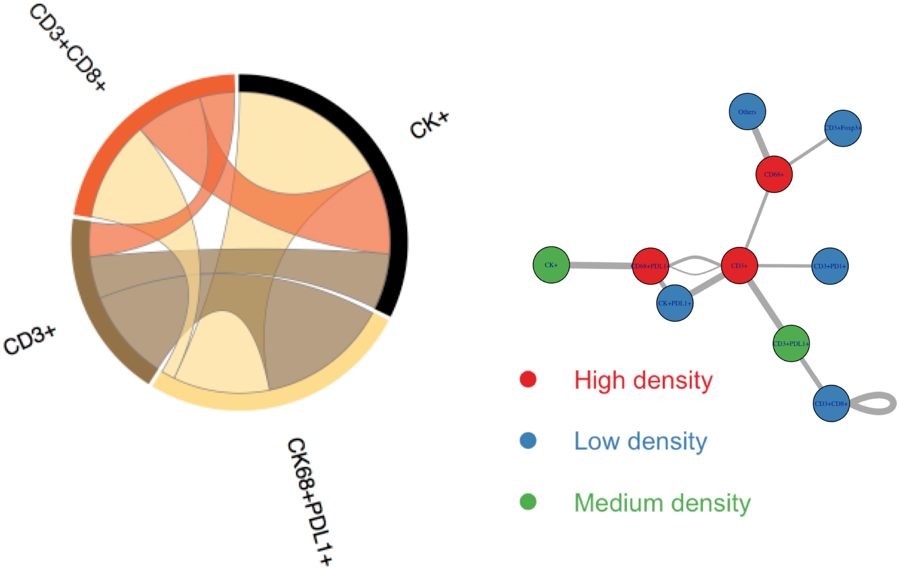
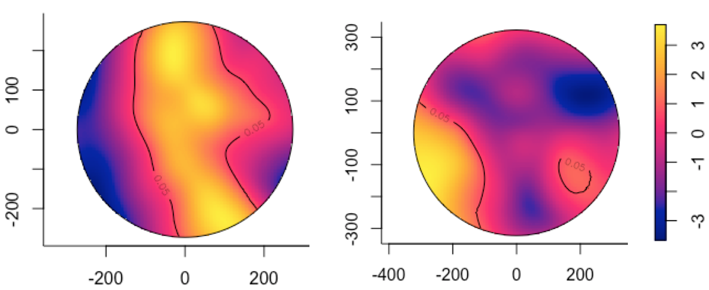

Spatial Image Analysis Report
Translational Molecular Pathology UT MD Anderson Cancer Center
Project Information
Date: 03/14/2020
Name: Triple Negative Breast Cancer (PID: TNBC)
Investigators: Dr. Fei Yang and Dr. Jennifer Litton
Project Description
Background: Triple negative breast cancer (TNBC) accounts for 10-20% of breast cancer cases diagnosed in the US. Tumor infiltrating lymphocytes (TILs) have become a topic of interest as a prognostic and predictive biomarker in triple negative breast cancer (TNBC). It has been shown the extent of TILs is predictive of response to therapy in patients with triple negative tumors and TILs is an important biomarker in breast cancer. However, specific subtypes of immune cells in tumor microenvironment and interaction between the immune cell subtypes in TNBC remains unclear. Immunotherapy is a rapidly evolving field for the treatments on TNBC. In the IMpassion130 Trial, advanced TNBC patients treated with Atezolizumab plus nab-Paclitaxel had a better progression-free survival compared with patients treated by nab-Paclitaxel in the tumor infiltrating PD-L1 positive subgroup. To better understand the tumor immune microenvironment in TNBC, we investigated PD-L1 expressing cells and subtypes of TILs by multiplex immunofluorescence (mIF).
Methods: 145 surgically resected breast cancer specimens in MD Anderson Cancer Center were used to build a tissue microarray (TMA) for mIF staining, including 107 TNBC, 28 ER/PR low expression cases (ER/PR 1~9%) and 10 luminal types as control. FFPE sections were stained for two mIF panels on Leica BOND RX using Opal™ 7-color Kit. Panel 1 has six markers, including PD-L1 (E1L3N), PD-1, CD3, CD8, CD68 and cytokeratin. Panel 2 includes Foxp3, GranzymeB, CD45RO, CD3, CD8 and cytokeratin. After scanning in the Vectra system (Akoya/Perkin Elmer), all phenotypes were analyzed via InForm software (Akoya/Perkin Elmer) and count of each phenotype was used to generate density and/or percentage for analysis.
Results: We found that PD-L1 positive TNBC were identified as 11.21% by TC score, 28.97% by IC score, and 30.84% by CPS. TNBC with higher density of PD-L1+ tumor cells (PD-L1+/CK+) had better DFS (HR=0.389, 95% CI 0.156-0.971, p=0.043). Density of CD3+ T-cells (CD3+) was an independent prognostic markers for TNBC (HR=0.207, 95% CI 0.077-0.558, p=0.002). TNBC with higher density of PD-L1+ cytotoxic T-cells (PD-L1+/CD3+/CD8+) had better DFS (p=0.019). TNBC patients with elevated specific immune cell subtypes showed favorable OS in univariate analysis, such as cytotoxic T-cells (CD3+/CD8+), memory T-cells (CD3+/CD45RO+), activated cytotoxic T-cells, (CD3+/CD8+/GB+), effector or memory cytotoxic T-cells (CD3+/CD8+/CD45RO+), and regulatory T-cells (CD3+/CD45RO+/Foxp3+).
Spatial statistics (all phenotypes)
Several spatial statistics such as the Ripley’s \(K/L\) functions, nearest neighbourhood function \(G\), the free space function \(F\) and \(J\)-function provide vital clues on the behavior of cells, such as clustering or inhibiting phenomena. Clustering could be interpreted as loss of contact inhibition of locomotion and/or proliferation which are hallmarks of tumor growth. Ideally if the cells are Poisson distributed and don’t cluster or inhibit, the \(J\)-function is \(1\). If \(r\) is the radius, \(J(r) < 1\) would show a clustering phenotype while \(J(r) > 1\) would illustrate an inhibiting phenotype.
While several statistics could be obtained, we report the \(J\)-function statistics for Panel \(2\) patients here corresponding to several clinical variables.

The top left chart shows the mean \(J\)-function statistics for patients given chemo (blue) and chemo plus radiation (red) therapies. We see that the cells cluster less for patients who were given only chemo compared to patients who were given both chemotherapy and radiation as the radius increases.
The top right chart shows the mean \(J\)-function statistics for the tumor stages \(T1\) (blue) and \(T2\) (red). From the stages perspective we infer that tumor \(T\)-staging is not indicative of cell movement and/or proliferation.
Spatial analysis images (considering all phenotypes) for several statistics such as \(K, G, F\) can be accessed [here]. The raw data corresponding to the images can be accessed [here]. See technical details and definitions section for more information on how spatial estimations are obtained.
Phenotype specific statistics


Dependencies between phenotypes

The dependency sankey images for each statistic (J/K/PCF/G) can be accessed [here]. The raw data corresponding to sankey images can be accessed [here]. See technical details and definitions section for more information on how dependency estimations are obtained.
Interaction between phenotypes

The interaction networks for each patient group can be accessed [here]. The raw data corresponding to interactions for each group can be accessed [here]. See technical details and definitions section for more information on how interactions are computed.
Relative risk estimation
Do cells of a certain phenotype, say, CK+ tumor cells, proliferate faster than the other stromal cells without the phenotypes, in TNBC?
An illustration of relative risk of proliferation between CK+ tumor and other stromal cells for Panel 1 Patient 134 Core B9 (left) and Panel 2 Patient 077 Core A2 (right) is shown below. The relative risk function is defined here as the ratio of the CK+ tumor cells density to other stromal cells density. Using kernel density estimation methods to model these densities (Diggle, 1985), we can obtain a workable estimate for the risk of proliferation.
The more “yellow” the color is, higher is the rate of proliferation or relative risk of tumor growth.

The relative risk images for each patient and their core can be accessed [here]. The raw data corresponding to relative risk for each image can be accessed [here]. See technical details and definitions section for more information on relative risk computations.
Several further research questions can be followed up and answered. Here are a few examples.
What are the rates of proliferation for other known phenotypes (like CD68+PDL1+) with respect to the rest of the cell types, or with respect to each other. In other words, how does the risk matrix looks like?
Are there a specific group of patients who exhibit higher proliferation of a phenotype than others?
How does the proliferation relate to pathology stages and grades?
Do people with higher proliferation of a phenotype survive shorter (overall and progression free) than people with lower proliferation?
How does risk relate to phenotype interactions?
Research & Innovation

Technical details and definitions
Spatial statistics functions (K/L,F,G,J)
Multi-type functions (Pair-correlation cross, Jcross, Gcross)
Interactions (Gibbs, Strauss, Geyer)
Relative risk estimation